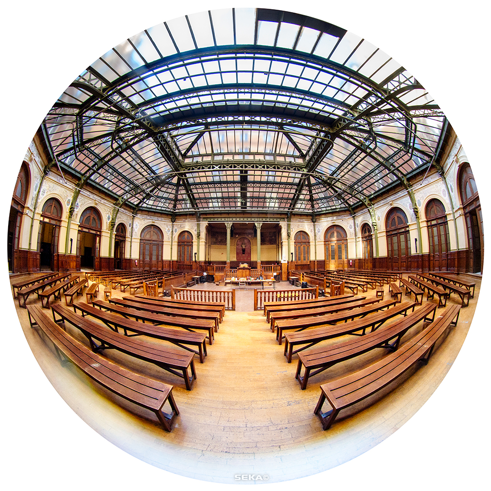

Prive Digital - février 2016 à septembre 2016
Conseiller technique et occasionellement développeur Android. Télétravail sporadique.
I design and develop software...
...when I'm not traveling
Je suis développeur Android ainsi qu'étudiant en dernière année de master à l'"Aalborg University", en "Human Centered Informatics". Je m'intéresse aussi bien au dévelopement logiciel qu'au design orienté utilisateur et aux interactions entre les utilisateurs et les systèmes d'information. Je me suis spécialisé dans le developpement mobile qui se trouve selon moi à l'intersection entre les problématiques techniques et celles en rapport avec les utilisateurs. À mon sens, la versatilité et l'esprit critique sont les meilleures compétences qu'un concepteur ou un dévelopeur puissent offrir.
Conseiller technique et occasionellement développeur Android. Télétravail sporadique.
Photographie argentique noir & blancPhotographie de différents aspects des mouvements sociaux du printemps 2016, exposition avec d'autres photographes à la Bourse du Travail de Paris. Travail de documentation, recherche sociologique et politique informelle, dévelopement et tirage argentique.
FeelnDéveloppement Android pour téléphones, tablettes et TV. Mis à part les aspect habituels du developement Android: implémentation d'un système de paiement utilisant l'Amazon In App Billing API, participation au processus de design UX pour l'interface de la version TV, implémentation pour Android TV avec une utilisation poussée de la Leanback Library.
Ripple NewsDéveloppement Android pour téléphones. Accent mis sur la gestion de l'API du client, sur les bonnes pratiques d'utilisation du récent pattern MVVM proposé par Google, sur la gestion du téléchargement de fichiers de taille importante, sur l'evolutivité et la maintenabilité de l'architecture logicielle, sur la qualité de la gestion Scrum du projet et la qualité du contact avec l'équipe technique du côté du client.
Design participatif, dévelopement iOS, travail d'équipeDesign et implémentation d'une application iOS pour iPad permettant à des personnes socialement handicapées en structure d'accueil de garder une trace d'évènements positifs dans leur vie. Le projet est le fruit d'un collaboration entre deux étudiants de master en expérience utilisateur, deux étudiants en informatique pour l'enseignement et une équipe d'éducateurs sociaux des services de la municipalité.
Recherche, travail d'équipe, observation participative, théorie de l'activitéRecherche sur l'utilisation d'outils informatiques dans une classe de lycéens danois, basée sur une semaine de d'observation participative et deux enquêtes. Analyse de la situation à l'aide de la théorie de l'activité historique et culturelle selon Engeström et au regard des résultats de Michael Paulsen sur le sujet.
Développement Android, Travail d'équipe, interactions 3DDéveloppement d'une application Android permettant de controler des robots et une caméra dans un environnement 3D simulé. Les objectifs principaux sont d'obtenir une interface intuitive et adaptable à d'autres contextes. Ce projet faisait partie d'un projet de plus grande envergure dont le but est de créer un modèle d'apprentissage pour des robots.
Dévelopement Android, travail en autonomie, cartographie, géolocalisationDévelopement d'une application basée sur un projet open-source. L'accent est mis sur l'ergonomie et la cartographie. Le projet est destiné au Parc National des calanques à Marseille.
Master - Human Centered Informatics
Erasmus - Human Computer Interactions
Licence - Ingénierie Logicielle
Scientifique Sciences de l'Ingénieur - Spécialité Physique - Option Musique